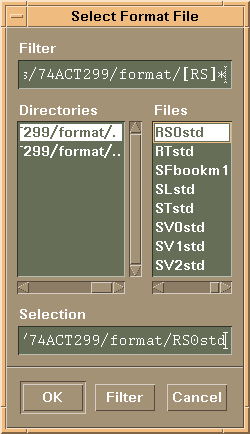

Selecting the output pins for FFV information
In the Output Pins field on the FFV tab (see Settings on the FFV tab), you select for which pins you want vector results to be displayed.
To select the pins you are interested in, you can use any pin format you defined in any of SmarTest's setup and result tools. To load a pin format, click the Select Format button. A file browser opens:

To display the pins in the pin list of the FFV page, select a format and click OK. To select subsets of the displayed pins, use the All, Output, Failed, and Selected radio buttons.
When no format is selected, the radio buttons apply to the entirety of all pins defined in the pin configuration.
You can select individual pins from the pins in the pin list. Select a single pin by clicking it, shift-click to select consecutive pins, or control-click to select/clear multiple individual pins.
Functional changes
- Introduced before SmarTest 6.3.2